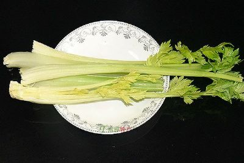
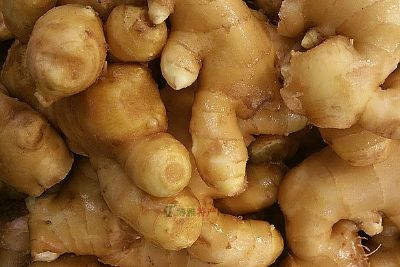
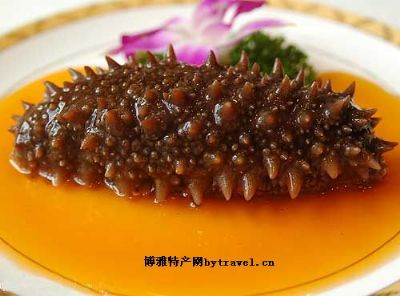
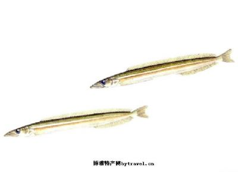
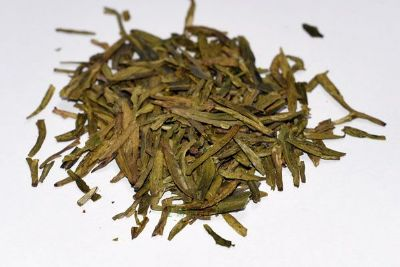
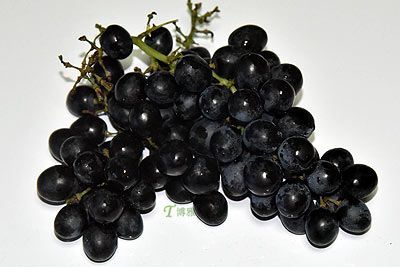
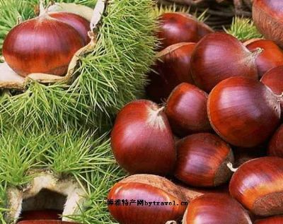

胶州种植大白菜已有400多年的历史。胶州大白菜的特点是个大帮薄、卷心紧、纤维少、汁白味甜，营养丰富，生食爽口，热食味腴。胶州大白菜在国内外享有很高声誉，号称“胶白”。这种菜耐储藏、易保管，是青岛城乡人民冬春季主要食用的蔬菜。( 青岛)胶州大白菜产于山东省胶州市南三里河村。它栽培历史悠久，具有其它地区大白菜所不具备的“外叶淡绿、纤维细嫩、美味可口、生熟食即可”的明显特征，是驰名中外的地方特产。 为满足国内外游客来胶州经贸洽谈、旅游、观光、考察的需求，胶州市旅游局在有关专家的指导和大力支持下，研制开发了在国内外享有盛名的胶州大白菜旅游纪念艺术佳品，具有极高的艺术欣赏和收藏价值。地域范围胶州大白菜是山东地理标志品牌产品,在本市的三里河、胶河、墨水河、胶莱河、大沽河、洋河两岸广为种植，面积6万亩左右。 特定品质“胶州大白菜”以其品质优良而著称，具有“帮嫩薄、汁乳白、味鲜美、纤维细、营养好”等优点，其品质和盛名史籍多有记载，文人多有吟颂。陈毅元帅曾在诗中赞美： “伟哉胶菜青，千里美良田”。 尤其鲁迅先生散文集《朝花夕拾？藤野先生》中的描述，更彰显了“胶州大白菜”的尊贵。

马家沟芹菜属山东省著名地方特产之一。距今已有1000多年的种植历史，因其独特的种植技术和生态环境塑造出的芹菜不仅叶绿茎黄，空心无筋，鲜嫩酥脆，味道鲜美，而且含有丰富的钙，铁，胡萝卜素&等多种人体所需的微量元素，因为芹菜属于粗纤维蔬菜，且含有芹菜油，具有独特的芳香气味，可开胃促进食欲，在医学上还有止咳健胃，降压排毒，养颜保健等多种功能。马家沟芹菜叶茎嫩黄、梗直空心、棵大鲜嫩、清香酥脆、营养丰富，品质上乘。含有丰富的钙、铁、胡萝卜素、维生素B1、维生素B2、维生素A、维生素C等多种人体必需元素，东马家沟芹菜属于粗纤维蔬菜，且含有芹菜油，具有独特的芳香气味，可开胃促进食欲，在医学上还清热止咳、健胃、降压、排毒、养颜等多种保健功能。由于当地特有土壤、水质和气候条件，产出的芹菜以叶绿茎黄、空心无筋、鲜嫩酥脆、味道鲜美、营养丰富享誉国内外市场，适合生食 
蟠桃大姜，山东省平度市特产。原产于该县蟠桃镇蟠桃山一带，因产地得名。蟠桃大姜以块大皮薄、色泽鲜亮、丝少肉细、辣浓味美、营养丰富、耐贮藏等优良特性而驰名中外，兼有食用和药用双重价值。蟠桃山位于平度市以北8公里处。早在清代，当地农民就开始种植大姜了。1996年3月，原蟠桃镇（后部分划归李园街道）被正式命名为“中国蟠桃大姜之乡”。.2010年，平度市大姜种植面积已达到1万多亩，并不断向周边地区扩展。随着科学技术的不断发展，大姜的产量也不断提高，蟠桃大姜平均亩产在5000公斤以上，高产地块可达到7000公斤，是中国大姜主要生产基地。蟠桃大姜不仅畅销中国各地，而且运销美国、日本、加拿大、荷兰、法国、南韩、香港等40多个国家和地区。1993年在泰国曼谷举办的农副产品国际博览会上获得“银牌”奖，1996年被农业部命名为“中国蟠桃大姜之乡”。 
平度大花生，中国山东省平度县特产，中国国家地理标志产品，平度大花生， 图1 平度大花生鲁药11号.纯天然无污染，含人体所必须的多种微量元素，各种营养成分均达到绿色保健食品的指标要求，是优质上乘的绿色保健食品。由于特殊的地理环境，以色泽亮丽，香中带甜，籽粒饱满，出油率高但不腻口等特点享誉国内外，不仅色泽纯正，而且品质极佳。.生产情况平度市花生主要分布在山区丘陵和平南、平西肥沃地区。由于四季分明的气候特点适合花生生长，病虫害较轻，生长期雨量充沛，收获期秋高气爽，黄曲霉毒素污染轻等因素，使得花生色艳、粒饱、香甜可口、不油不腻。. 平度大花生保护面积32.5万亩，区域涉及16个镇。中国是世界仅有 图2 平度花生机械化生产.的几个花生主产国之一，产量居世界首位，出口量也居世界第一。山东又是中国的花生主产区，花生出口占全国出口总量的三分之一强。
灵山岛海参品质过硬灵山岛海参为何会获得国家“地标”保护？记者了解到，这与灵山岛的自然环境和海参品质有关。据了解，灵山岛位于青岛胶南市东南黄海海域中，是青岛市最大的海岛，是我国北方第一高岛。岛的周围海域宽阔，水质十分洁净，是青岛市乃至山东省难得的水质清洁的水域。同时，海岛光照充分，年平均无霜期在250天以上，特别适合海参、鲍鱼等珍贵海洋生物的生长、繁衍。灵山岛海珍品种质资源保护区远离陆地，岛上无大型工业污染源，海域附近周围没有渔港、大型港口码头等较大污染源，海水水质常年可达到一级海水水质标准，是刺参理想的增养殖和繁育基地。灵山岛海参属仿刺参，是黄海南部种群的核心群体。据了解，灵山岛海参成品的生长过程与野生海参相差无几。挑选出优质参种后，经繁殖、孵化，成幼苗后投放藻类饵料培育暂养。当海参长到体重1克左右，进行底播增殖培育，纯自然生长、自然放养 
西施舌是北方海域中个体较大型贝类。斧足肥厚，颜色乳白，上尖下阔，光滑圆润，酷似人舌。肉质细腻，味道鲜美，与海参、鲍鱼齐名，被称为海中上八珍之首。西施舌的名称来自一个古老的传说。在春秋时期。西施与越国国相范蠡本来是一对情侣，后来因为越国复国需要，她被勾践当礼物献给了吴王夫差，夫差沉湎酒色，疏于国政。而勾践却卧薪尝胆，励精图治，十几年后，越甲吞吴，勾践在范蠡的协助下，一举打败夫差。夫差临死还贪恋酒色，在出逃的船上让西施为他唱歌。西施认为自己的使命已经完成，不再留恋于世，咬断舌头，跳江自杀。她的舌头被江中的一只神蚌接住。神蚌被西施的情义所感动，将舌头含在口中，四处寻找范蠡，准备把西施的舌头交给他。听说越国迁都琅琊，神蚌不远万里从江南沿海来到琅琊，后又得知范蠡在越国灭吴后就不再为勾践谋事，弃武经商，定居在定陶一带。水蚌无法逾越旱路，只好含着西施的舌头在琅琊附近海边等侯范蠡。一代又一代，形成了一种优美的海产珍贝—西施舌。
玉筋鱼俗称“面条鱼”，在全国分布较广，但品质各有不同，尤以胶南市琅琊玉筋鱼为最佳，其形体小、肉质细腻、口感佳，富含多种营养元素。琅琊镇及周边渔民自古就有加工生产玉筋鱼的传统，已经形成了一种重要的地区产业，产品远销全国各地。2012年以来，胶南市划定琅琊镇周围海域为农产品地理标志地域保护范围，并完善各种材料，积极向国家农产品地理标志登记专家评审委员会申报农产品地理标志认证，来保护当地这一独特品种，提高琅琊玉筋鱼的品牌影响力，促进当地玉筋鱼加工产业的发展。琅琊玉筋鱼农产品地理标志地域保护范围为胶南市所辖琅琊镇。玉筋鱼（Ammodytes personatus），玉筋鱼科，玉筋鱼属，因形体酷似山东农家的面条，在本地俗称“面条鱼”，又名沙里钻，近海沙泥附近小型鱼类，体长柱状，稍侧扁，成鱼长约10-13厘米。保护区海域物产丰富，水域广阔，无径流注入，乎不受大陆影响，水质无污染，水文条件相对稳定。据历年玉筋鱼的捕捞资料表明.由于超规模、超强度、超时间的捕捞，已经造成玉筋鱼资源发生明显变化。琅琊玉筋鱼味道鲜美，营养十分丰富，富含人体所需的多种氨基酸（≥11.64％）、蛋白质（≥15.8％）、脂肪（< 5.4％）、钙（≥362mg/100g）及铁（≥1.49mg/100g）等，为鱼类上品。 
崂山茶场在号称“北国小江南”的崂山太清景区的山脚下，这里出产的绿茶，色、香、味、形具佳，冲饮清香宜人。( 青岛)崂山绿茶地理标志产品保护范围以山东省青岛市崂山区《关于申请划定崂山绿茶地理标志产品保护产区的函》（崂政函［2006］2号）提出的范围为准，为山东省青岛市崂山区王哥庄、沙子口、中韩、北宅等4个街道办事处现辖行政区域。 
大泽山葡萄集中产于平度市北部大泽山西麓一带，方圆约30里，是全省最大的葡萄产区。大泽山镇被国家定为“葡萄之乡”。大泽山葡萄有100多个品种，主要有玫瑰香、玫瑰露、龙眼、红鸡心等，近年还种植了名贵的查当尼、薏丝琳等琅酒专用的品种。大泽山葡萄穗大粒饱，形色美观，含糖量高，香味浓郁，是山东省名产果品之一。有人称大泽山葡萄：“眼看稳头美，刀切不流水，入口胜蜜糖，满口清香味。”现已畅销国内各地，远销日本、新加坡和港澳等国家和地区。中国的山地丘陵地形比比皆是，但像大泽山这样独特的自然条件却不多见，大泽山脉绵亘百余平方公里，葡萄种植区域集中于山脉西麓一带，方圆约30里，呈东西走向，横贯在胶东半岛东部，像一道天然屏障挡住来自北方冷空气的影响，山前沟涧交错，形成大小不等盆地和川夼，大泽山镇中心为泉水汇集的水库－－大泽山水库，村落和耕地分布山脚下、水库旁，“群山环而出泉，汇为大泽”，群峰环绕大体上构成了一个大盆地环境，造就了一个适合葡萄生长的得天独厚的自然环境和小气候区，同时春季气温回升早，大樱桃等水果比烟台地区早成熟7-10天，雨量多集中在6、7月份，在8、9月葡萄成熟季节，大多数年份天晴少雨，昼夜温差大，利于果实积累糖分，与法国的地中海型气候相似，非常适宜葡萄种植，20世纪70年代始，国外专家先后前往考察，称誉大泽山是“中国的波尔多”。土壤为岩石风化形成的沙壤、棕壤等砂质土，透气性强，富含磷、钾等，有机质多。葡萄种植历史悠久，始于何时，无法考证。成书于清康熙五年的《平度州志》，已把葡萄列为主要水果之一。据此推算，大泽山葡萄栽培历史至少在300年以上。三山东头村、谭家夼、尹家、潘家等村是为种植最早的村庄。清末，已较普遍和大面积种植，品种主要是龙眼（狮子眼）、柳子，一直为原青岛葡萄酒厂供应原料，80年代后葡萄种植成为当地主业，粮食作物停止种植，近年来酿酒品种发展较快，烟台张裕、青岛华东、中粮等葡萄厂家在当地设有种植基地。生食当家品种为“玫瑰香”、“泽山一号”，酿酒当家品种为“莎当妮”、“赤霞珠”、“百醇”。葡萄产业已成为当地农民赖以生存的经济来源。 
莱西大板栗是1991年在院上镇发现的板栗优株。1992-1998年通过嫁接栽培观察，确认其果实个大美观，品质优良，丰产性状稳定。1998年10月，通过山东省林业厅组织的有关专家鉴定，定名为莱西大板栗，其果品在1997年山东省果品展评会上获金奖，其中院上镇北辛庄种植板栗面积最广，种植面积6000亩，2011年成功申报农业部农产品地理标志，质量上乘，素有“一栗难求”之美誉。莱西大板栗为落叶乔木，栗果椭圆形，红棕色，有光泽，果顶略生一小撮茸毛，外观漂亮。果实大，平均单果重18克，维生素C含量为每百克鲜样36.5毫克，可溶性总含糖量为每百克鲜样10.54毫克，淀粉、粗蛋白质、粗脂肪的干样含量分别为26.57%、7.24%和1.745%。品种名称：莱西大板栗品种来源：莱西市院上镇大里村品种分布：主要分布在莱西市院上镇和马连庄镇。大板栗特征特性: 莱西大板栗为落叶乔木，栗果椭圆形，红棕色，有光泽，果顶略生一小撮茸毛，外观漂亮。果实大，平均单果重18克，维生素C含量为每百克鲜样36.5毫克，可溶性总含糖量为每百克鲜样10.54毫克，淀粉、粗蛋白质、粗脂肪的干样含量分别为26.57%、7.24%和1.745%。 